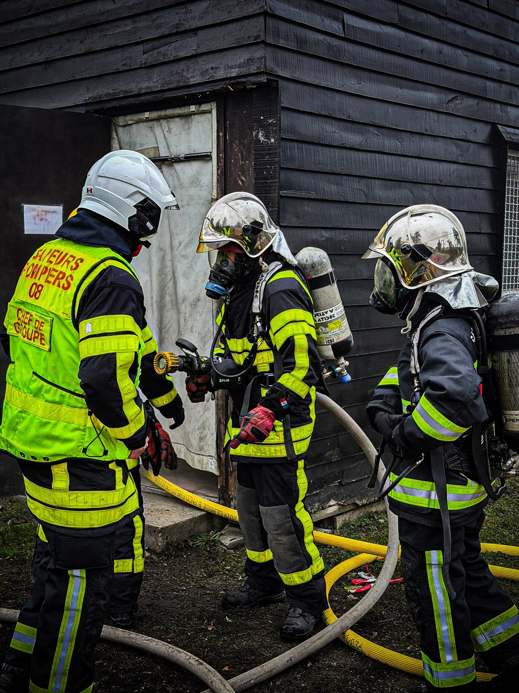

Vie du centreManœuvre intercentres à Boult-aux-Bois
Les sapeurs-pompiers du Chesne et de Buzancy réunis pour une manœuvre intercentres.
Lire l’article →Actualités
Manœuvres, formations, événements de l’amicale et vie du centre : nos dernières nouvelles.

Vie du centreLes sapeurs-pompiers du Chesne et de Buzancy réunis pour une manœuvre intercentres.
Lire l’article →Photographies de la manœuvre du 8 novembre 2026 fournies par le centre.